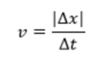
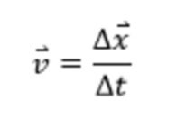
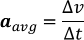
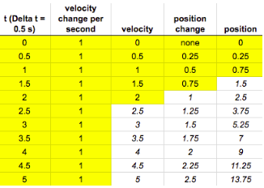
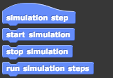

When describing the motion of an object quantitatively, one of the fundamental ways we as physicists apply numbers to
abstract ideas is to identify an object’s position relative to some fixed reference point. From the perspective of the
reference point, if the object remains at the same position it does not move, but as soon as the object’s position begins
changing, it is moving. Motion then is inherently related to changing position. Within the programming environment, it
will be helpful to note where the reference point is in the scene and how different positions are measured relative to
that reference point, usually within the context of a Cartesian (x,y) coordinate system. Note that this position is
properly termed a vector quantity because the position is specified with both a magnitude of how far from the reference
point the object is and a direction of which way that position is relative to the reference point.
Speed
Once moving, it is next helpful to quantify how much the object is moving. The proper physics-y term for this is speed,
and your interpretation of speed is likely very similar to the scientific definition. We as motorists have all seen
speed limit signs denoting a certain rate of miles per hour that we can, should not, but do drive above until the state
of Tennessee sends a number of unmistakable messages that your home state of Alabama was way too lax on speed limit
enforcement but Tennessee is not so it’s best to relearn how you approach planning any commute so that you have more time
and don’t need to zip and weave around every other responsible driver on Ellington Parkway. But let’s not bring up old
stuff. The important thing is that speed is relating how much a position changes (the miles part) to how long that change
takes. The proper quantification and representation for these related changes is:

where v represents speed, xrepresents the change in position (recall that the triangle symbol is the Greek letter “delta”
and means change mathematically), and tis the time interval or time step over which that change in position is measured.
Speed is a scalar quantity, so it only represents the magnitude of that motion. The absolute value symbols around the
change in position support this scalar representation. All this means that the number arrived at for the speed directly
correlates to how fast the object moves: larger numbers for speed represent faster moving objects, smaller numbers
represent slower moving objects, and a speed of zero represents an object that is not moving or at rest.
Velocity
Velocity in contrast is a vector quantity, therefore, it includes both magnitude, which on its own is speed, and direction.
Generally this means that velocity is the time-rate at which an object’s position changes. Therefore, if a person takes 3
steps to the right along the x-axis, and 1 to the left on the x-axis, all in one second, we compute the person’s velocity
to be 2 steps/second in the +x-direction. In general, velocity is defined as the change in position divided by the time of
that change. Mathematically, this can be written as:

Notice that just as in speed, velocity is defined as a change in position per some time interval, but now there are no absolute
value signs and both v (now for velocity, which is the same as speed if there’s an absolute value and no direction) and x have
little arrow signs above them. Those arrow signs indicate that both quantities are vectors and therefore depend on which direction
the change occurs. As a mathematical convention, direction is handled with a sign that corresponds to which direction along the
x-axis the change occurs; generally left is negative, and right is positive.
As programmers, we will be paying special attention to Δt due to its importance in modeling the speed or velocity. In more
complex simulations, making Δt small will generate more accurate behaviors; however, there is a tradeoff. Suppose we want
to generate the behavior of a system for Δt seconds from the start of the simulation. Δt is called the simulation
time. If we reduce Δt, we may make our simulation results more accurate, but our simulation will take longer to run.
Therefore, there is a tradeoff between how fast the simulation takes to complete, versus how accurate we want the simulated
behaviors to be. In most situations, small changes in Δt will not make noticeable differences in the execution time of
a simulation, because computers nowadays and most days since the ‘80s are quite powerful.
Acceleration
As you may have seen in the video, acceleration is defined as the rate at which velocity changes.
Mathematically, this can be wriiten as:

where Δv is the change in velocity over a simulation time step, and Δt is the length of the simulation time step in seconds.
To understand acceleration, study this table. In this example, the velocity of the object changes by a constant amount every time step (second).
Note how the velocity itself changes as time advances.
What about the change in position over time? Think on the equation(s) used in your final velocity module as you prepare the next few tasks!

Key Concepts for 2D Velocity
Resultant Velocity: the vector sum of all it's other velocities in other directions.
Vector Resolution: the method of taking a single vector at an angle and separating it into two perpendicular parts.
Vector Components: the x and y parts of a vector that describe the influence of that vector in a single direction (either horizontally or vertically).
There are two velocities that are acting on the boat:
Velocity, Vx-- due to the flow of the river
Velocity, Vy-- due to the engine on the boat
In terms of Physics, the x and y components of the boat’s velocity are independent.
So, how do we compute the velocity of the boat. Given the two velocity components are perpendicular to each other, we can use the Pythagorean theorem to compute the resultant velocity of the boat:
And how do we compute the direction in which the boat moves. To do that, we have to apply trigonometry.
, where is the angle at which the boat moves with respect to the x-axis, which is parallel to the river bank. Therefore, , the heading of the the boat can be calculated as
Gravity: Gravity is measured by the acceleration that it gives to freely falling objects. At Earth’s surface the acceleration of gravity is about 9.8 metres (32 feet) per second per second. Thus, for every second an object is in free fall, its speed increases by about 9.8 metres per second.
Glossary of Physics Blocks
Block(s)
Definition
Similar to the green flag for the overall project, the simulation step block will run when called to.
This should be at the end of the steps you initiate at the green flag. Using this block calls your simulation step block.
If you want your simulation to stop at a certain point, use this block!
A variable keeps track of the time (in seconds) that the simulation has been running. If you would like to see the value of the variable on the stage or graph its change during the simulation, make sure it is checked!
A variable that keeps track of the change in time for your simulation. If you would like to see the value of the variable on the stage or graph its change during the simulation, make sure it is checked!
As with any other variable, this block allows you to set the value of delta t.
The variables that keeps track of the current x and y positions of the assigned object. If you would like to see the value of the variable on the stage or graph its change during the simulation, make sure it is checked!
To set the x or y position, use this block!
This block allows you to change the x or y position. When called, it changes the position based on the input once. Therefore, in a simulation step it is continuously called until the simulation ends.
The variables that keep track of the x and y velocity of the assigned object. If you would like to see the value of the variable on the stage or graph its change during the simulation, make sure it is checked!
Allows you to set the velocity variable (either x or y or both) to a desired value.
This block allows you to change the x or y position. When called, it changes the position based on the input once. Therefore, in a simulation step it is continuously called until the simulation ends.
If your program requires a reference to the position of another object, you can use these blocks to either keep track or set the position of the other object.
We've included the graphing blocks to use whenever you do not use a simulation step. If you use the simulation step blocks, the variables selected will automatically be graphed (click on the graphing icons under the stage to view!
This is an example of a behavior block. They will appear at the bottom of the physics category of blocks if selected in the conceptual model. To edit, right click on the block and select "edit."
Simulation Model
Our goal in this project is to learn physics by building computational models.
Here we will build a particular form of a computational model called a simulation model.
Let us explore what we mean by a simulation model. What are its essential components?
Computational modeling is the use of computers to simulate and study the behaviors of systems.
A computational model contains variables that characterize the system being studied and the relations between those variables, expressed in a mathematical form.
Computational models come in various form. One type of a computational model is a simulation model, where we model the behaviors of a system in a mathematical and logical form that can be executed as a computer program.
In the current study, we will build simulation models in kinematics,
which is a branch of physics where we model the motion of physical objects without considering the forces that cause the motion.

Since we are interested in the motion of objects, our simulation models will capture the behaviors of objects over time.
There are many ways in which we can model the behavior of an object over time.
One useful way is to define how the behavior of objects evolve over one time step.
One can then simulate or execute this model for multiple time steps to study how the behavior of the objects evolve over time.
In other words, we define the model of the system for one simulation step, and repeat the execution for a fixed number of steps.
Sometimes, we can execute the simulation in an infinite loop, until a specific termination command ends the simulation.
SImulation helps us solve problems digitally on a computer, which saves us a lot of time and money, especially when we design and build complex systems like cars, aircraft, spacecraft, and power plants. Simulations also help us understand the natural and physical world, and how we may interact with the world in an effective and safe manner. To do this, we run experiments with our simulation models.
To run experiments with the model, one can vary some of the variables of the system model, to understand how the behaviors are affected by the variable values, and also to determine what variables achieve specific outcomes.
Why do we care? When you are driving a car and see a sharp bend ahead, you know you have to slow down to negotiate the bend; but how often do you think of the deceleration needed to slow down the car to a safe speed? You may not, but the engineers who design the car do. Very often, these engineers create simulation models to study and design how to provide safe braking functions.
So far, all of our actions happen as soon as the green flag is clicked. As a means of adding more structure to the program, let’s create a model for a simulation step. To do so, initial variable creation will still happen at the green flag (such as asking the user for input and setting the respective variable to the submitted answer), but the simulation actions will take place in a simulation step that is called once all variables are initialized.
Conceptual Model
Introduction to the Conceptual Modeling: We talked about building computational models earlier to describe motion of physical objects. We also saw that computational modeling on a computer involved creating programs that represent computational models of the physical system or phenomenon that contain one or more objects. Initially, this entails identifying (or exploring) the parameters (variables) that play a role in the system being modeled and the mechanisms or rules that govern the phenomenon (these then constitute the “algorithm” in the computational model).
Very often, especially as the phenomenon being modeled becomes complex, it is useful to generate a structure for the model that we are trying to construct. Scientists and engineers often call this an abstract representation of a problem. Why do we want to create an abstract representation of a problem before we build its computational model and study its behaviors?
The principle of abstraction is very important in programming. Through the process of abstraction, a programmer hides all but the relevant details about an object in order to reduce the complexity in its description, and also making it easier to write programs that define its behaviors. You can see that the same issues apply when we think of modeling a science phenomena. For example, if we are modeling the motion of an object in kinematics, the position, velocity, and acceleration of the object at any time, are important parameters or variables to describe the object’s motion. On the other hand, the shape and size of the object, its color, whether the body of the object has stripes painted on it, and who the object belongs to is irrelevant. By choosing only the relevant properties of objects, and none of the extraneous ones makes it easier for us define the behaviors and then build computational models corresponding to these behaviors. In C2STEM, we will adopt this practice of combining conceptual and computational modeling, to help us structure the modeling task, and make it easier for us to generate correct model behaviors. You can see that this idea is simultaneously supported as a good programming practice. So, let us adopt it as we move forward.
In C2STEM we will be utilizing a conceptual model in order to organize the variables and behaviors that define each physics simulation model. Think of conceptual modeling or creating an abstract representation also as big picture planning when constructing a model. What components of the model do we need to build simulation models for using physics concepts and principles (laws)? We do not want to overload our computational model (and we definitely don’t want to overthink/create confusion with too many possibilities!).
In the Conceptual Model tab, you will need to add an objects that are relevant to the scenario you are building the model for, and add the necessary properties and behaviors that agent will need to have in the computational model to correctly model the system behavior.
Computational Thinking Constructs
Abstraction: reduces information and detail to facilitate focus on relevant concepts.
Algorithms: a process or set of rules to be followed in calculations or other problem-solving operations.
Encapsulation: this construct can have a twofold meaning where either you restrict
direct access to an objects components (e.g. behaviors and properties) and/or bundling data with the functions that operate on that data.
-- In Module Two, we want to restrict access to the behaviors and properties of the boat, but what about the properties
behaviors of the river? Are those components strictly related to the properties and behaviors of the boat?
-- In Module Two, what role does gravity play in the overall environment?


 , where is the angle at which the boat moves with respect to the x-axis, which is parallel to the river bank. Therefore, , the heading of the the boat can be calculated as
, where is the angle at which the boat moves with respect to the x-axis, which is parallel to the river bank. Therefore, , the heading of the the boat can be calculated as